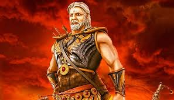

Weapon

Skill
Bhishma was one of the greatest warriors and strategists of the Mahabharata era. Trained by Parashurama, one of the fiercest sages and warriors, Bhishma mastered every form of combat—archery, swordsmanship, and warfare strategy. His vow of celibacy and his dedication to duty made him a symbol of honor and discipline. Even the gods respected his wisdom and strength. Bhishma’s mastery of divine weapons and his ability to control his death (Ichha Mrityu) made him unique among mortals.
War
During the Kurukshetra war, Bhishma fought as the commander-in-chief of the Kaurava army. Despite his love for the Pandavas, he upheld his duty toward the throne of Hastinapura. For ten days, Bhishma led the Kaurava forces and defeated many great warriors. No one could stop him until Arjuna, guided by Lord Krishna, brought down Bhishma with the help of Shikhandi. Even while lying on the bed of arrows, Bhishma continued to teach righteousness and governance until the right time of his death.
Character
Bhishma, originally known as Devavrata, was the son of King Shantanu and the river goddess Ganga. He is remembered as the perfect embodiment of truth, sacrifice, and duty. His vow of lifelong celibacy, taken to ensure his father’s happiness, earned him the name “Bhishma,” meaning “one who took a terrible vow.” His character reflected supreme self-control, honor, loyalty, and devotion to dharma (righteousness). Even though he served the Kauravas, his heart always desired the victory of righteousness and justice.
Family Details
Bhishma was the eighth son of King Shantanu and the goddess Ganga. After his father’s marriage to Satyavati, Bhishma took a vow of celibacy to protect his father’s lineage. He never married and had no children of his own. He loved his half-brothers, Chitrangada and Vichitravirya, and later took responsibility for raising their heirs—Dhritarashtra, Pandu, and Vidura. Bhishma served as the guardian and mentor of the Kuru dynasty, acting as both protector and advisor across generations.